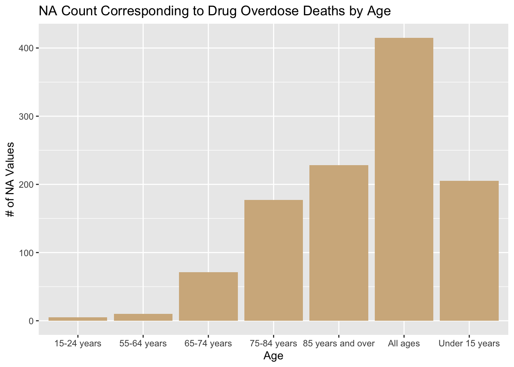
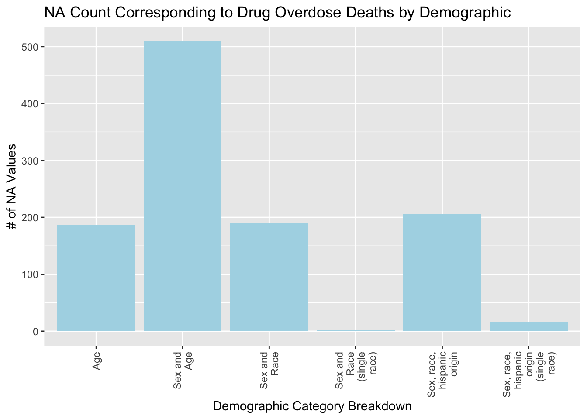

Code
drug <- read.csv('~/Downloads/drug_overdose.csv')For this project we will be inspecting four separate databases.
The first data source we will inspect is called “Drug overdose death rates, by drug type, sex, age, race, and Hispanic origin: United States”. This data set shows the rate of overdoses for different age groups, races, and genders from 1999 to 2017. This data set also breaks down the fatalities by drug type. These data are collected by the National Center for Health Statistics, which is part of the Centers for Disease Control and Prevention. It is an aggregate of public-use mortality files as well as U.S. Census Bureau national population estimates. The data are separated row by row for each demographic, year, and drug type. Each row represents a death rate. For instance, one row tells us that in the year 2017, about 1.6 out of every 100,000 females of American Indian or Alaskan Native descent died to a methodone overdose. This database was created in May, 2021 and was last updated in April, 2022. There are 6228 rows and 15 columns. One issue with this data set is that there are some redundancies. For example, there may be a row on death rates for black males and a separate row for black males (no Hispanic or Latino origin). This issue is easily resolved by faceting the data based on category breakdown. There are several ways to delineate categories, but the “STUB_NAME” column makes it easy to choose which category you would like to inspect (Age, Age and sex, Sex and race and Hispanic origin). By faceting using this column, no redundancies will corrupt the data. We accessed this data from the following web page- https://data.cdc.gov/NCHS/Drug-overdose-death-rates-by-drug-type-sex-age-rac/95ax-ymtc and downloaded the data set as a CSV file, which we then imported to RStudio.
The second data source we inspect is called “National Health Expenditures by type of service and source of funds, CY 1960-2021”. This comprehensive dataset shows how much money is spent annually on healthcare, both by the government and by the population. It includes dozens of sources, but we are mainly interested in out of pocket, private health insurance, medicare, and medicaid. These data are collected by the Centers for Medicare & Medicaid Services. The NHEA measures annual U.S. expenditures for health care goods and services, public health activities, government administration, the net cost of health insurance, and investment related to health care. The data are presented by type of service, sources of funding, and type of sponsor. The purpose for including this data is to create visualizations that show potential relationships between healthcare spending and opioid abuse. Are people in need more likely to self-medicate if the government isn’t providing medical care? This dataset is updated annually. There are 541 rows and 62 columns. An important feature of this data is that the values listed are scaled down 1:1,000,000 so each item must be multiplied by one million to equal its actual value. We accessed the data from the following CMS web page- https://www.cms.gov/data-research/statistics-trends-and-reports/national-health-expenditure-data/historical and downloaded the data set as a CSV file, which we then imported to RStudio.
The third dataset used is the national unemployment rate. This data set consists of a list of years and the corresponding rate of unemployment for each month. These data are collected by the U.S. Bureau of Labor Statistics through a nationwide survey for a random sample of the population. The database is updated monthly. There are 19 rows and 13 columns. We accessed this data from the Bureau of Labor Statistics from the following web page- https://data.bls.gov/pdq/SurveyOutputServlet. The website has a handy UI that allows users to select a time frame of years to inspect and download. For our purposes, we selected 1999 to 2017 and exported the data as a XLSX file. The download included some extraneous titles and comments in the XLSX file, so we manually deleted those before importing the numerical data to RStudio.
The fourth and final dataset used is the national population. This data consists of the population of the United States for the 19 years spanning from 1999 to 2017. These data were collected by the Federal Reserve Bank of St. Louis, FRED from the World Bank. This Data is collected annually. There are 19 rows and 2 columns. We accessed this data from FRED via the following web page- https://fred.stlouisfed.org/series/POPTOTUSA647NWDB This site lets the user select the years they are interested in and download only that information. From this site, we downloaded the data as a CSV file.
Our data will allow us to explore some of the potential relationships discussed in the introduction. It is well known that correlation does not prove causation, but with well-made graphs we can inspect trends within the data. One question that we asked is “is there a relationship between ethnicity and drug overdose?”. To answer this we can facet the overdose dataset by ethnicity and create graphs that display the death rates of different ethnicities next to one another. Another question we asked was “Does an increase in opioid abuse correspond to an increase in the national unemployment rate?”. For this, we could superimpose a timeline of the unemployment rate over drug-related mortality rates for working-age groups. Last, we asked “do overdose rates correlate with the cost of healthcare?”. To investigate this inquiry, we can use the healthcare spending database to show how much citizens must pay out of pocket for healthcare for a span of years, and compare it to fatal drug-abuse instances. Our general workflow will consist of asking a question, deciding which datasets will help answer that question, parse the datasets to extract relevant information, and finally generate a graph that will let us visualize a trend in the data.
Download Dataset
drug <- read.csv('~/Downloads/drug_overdose.csv')From the graph below we can see that there is only one column that contains NA values. This column is called “ESTIMATE” and refers to the estimate of the number of deaths that occured due to drug overdose. There are around 1,100 NA values in this column out of a dataset that is around 6,200 rows. This is a significant number of NA values, but looking at why these NA values exist and exploring the other columns in the dataset that correspond to a NA value in ESTIMATE can help us understand why this number is high.
library(ggplot2)
drug_na <- data.frame((colSums(is.na(drug))))
drug_na$row_names <- row.names(drug_na)
colnames(drug_na) <- c('na', 'column')
ggplot(drug_na, aes(x=column, y=na)) + geom_bar(stat='identity', fill='cornflowerblue') + theme(axis.text.x = element_text(angle = 90, vjust = 0.5, hjust=1)) + labs(x = 'Column', y='NA Values', title='NA values for each column- Drug Overdose Dataset') + geom_text(stat='identity', aes(label=na), vjust=-1, size=2) From the plot titled “NA Count Corresponding to Drug Overdose Deaths by Demographic” we can see that a little over 500 of the NA values in ESTIMATE correspond to a value in the ‘STUB_NAME’ column with value ‘Sex and Age’. The STUB_NAME column gives us insight into the STUB_LABEL column and what demographic information is available for that row. As discussed earlier, the values in this column that correspond to a NA value in ‘ESTIMATE’ are represented in the data already. Therefore, even though the number of NA values for ‘ESTIMATE’ due to the ‘Sex and Age’ category looks high, the information has already been captured in the data previously.
Looking at the other graphs, we can see that the missing values in ‘ESTIMATE’ do not stem from a single year or a set of few years, they are distributed fairly evenly among the years. Therefore, we are not losing too much information from one year compared to the rest. Finally, from the Age and Drug Type graphs we can see that more of the missing values stem form the “All Ages” category and the “Heroin” and “Methadone” categories respectively.
It is important to emphasize that the NA values in the data will not corrupt the results of our exploration once the dataset is properly parsed and faceted.
library(stringr)
drug_na_sub <- drug[is.na(drug$ESTIMATE), ]
ggplot(drug_na_sub, aes(drug_na_sub$AGE)) + geom_bar(fill='tan') + labs(x = 'Age', y='# of NA Values', title='NA Count Corresponding to Drug Overdose Deaths by Age') 
ggplot(drug_na_sub, aes(drug_na_sub$STUB_NAME)) + geom_bar(fill='lightblue')+ theme(axis.text.x = element_text(angle = 90, vjust = 0.5, hjust=1))+scale_x_discrete(labels=str_wrap(c("Age", "Sex and Age", 'Sex and Race', 'Sex and Race (single race)', 'Sex, race, hispanic origin', 'Sex, race, hispanic origin (single race)'), width=10)) + labs(x = 'Demographic Category Breakdown', y='# of NA Values', title='NA Count Corresponding to Drug Overdose Deaths by Demographic')
ggplot(drug_na_sub, aes(drug_na_sub$YEAR)) + geom_bar(fill='salmon') + labs(x = 'Year', y='# of NA Values', title='NA Count Corresponding to Drug Overdose Deaths by Year')ggplot(drug_na_sub, aes(drug_na_sub$PANEL)) + geom_bar(fill='sienna') + theme(axis.text.x = element_text(angle = 90, vjust = 0.5, hjust=1)) +scale_x_discrete(labels=str_wrap(c("All", "Opioid", 'Heroin', 'Methadone', 'Semisynthetic Opioids', 'Other synthetic opioids (Not including Methodone)'), width=10)) + labs(x = 'Drug Type', y='# of NA Values', title='NA Count Corresponding to Drug Overdose Deaths by Drug Type')Download the dataset and perform basic preprocessing to format the dataset in a usable manner.
library(dplyr)
Attaching package: 'dplyr'The following objects are masked from 'package:stats':
filter, lagThe following objects are masked from 'package:base':
intersect, setdiff, setequal, unionlibrary(data.table)
Attaching package: 'data.table'The following objects are masked from 'package:dplyr':
between, first, lastlibrary(dplyr, warn.conflicts = FALSE)
nhe <- read.csv('~/Downloads/NHE2021.csv')
nhe <- transpose(nhe)
nhe_new <- nhe
colnames(nhe_new) <- nhe[1, ]
nhe <- nhe_new
nhe <- nhe[-1,]
rownames(nhe) <- c(1960:2021)
nhe$Year <- rownames(nhe)
nhe <- subset(nhe, Year > 1998 & Year < 2018)
nhe <- nhe %>% select(c(1, 2, 4, 5, 6, 281, 282, 284, 285, 286))
colnames(nhe) <- c('Total National Health Expenditures', 'Out of pocket', 'Private Health Insurance', 'Medicare', ' Medicaid (Title XIX)', 'Total Prescription Drug Expenditures', 'Out of pocket-Drug', 'Private Health Insurance-Drug', 'Medicare-Drug', 'Medicaid (Title XIX)-Drug' )In this graph, we plot the number of rows in each column in the dataset that are not NA. Each row in the graph corresponds to a year and because we are considering years 1999-2017 inclusive, there are 19 years. Therefore, this graph shows us that there are no missing values as they all have 19 rows.
nhe_na <- data.frame((colSums(!is.na(nhe))))
nhe_na$row_names <- row.names(nhe_na)
colnames(nhe_na) <- c('na', 'column')
ggplot(nhe_na, aes(x=column, y=na)) + geom_bar(stat='identity', fill='cornflowerblue') + theme(axis.text.x = element_text(angle = 90, vjust = 0.5, hjust=1)) + labs(x = 'Column', y='# of Values', title='Number of values in each column- NHE') + scale_x_discrete(labels=str_wrap(colnames(nhe), width=10)) + geom_text(stat='identity', aes(label=na), vjust=-1, size=2) Download the dataset and calculate the average unemployment rate per year from each month.
unemployment <- read.csv("~/Downloads/unemployment.csv")
annual <- rowMeans(unemployment[, 2:13], na.rm=T)
unemployment$Annual <- annualIn this graph, we plot the number of rows in each column in the dataset that are not NA. Each row in the graph corresponds to a year and because we are considering years 1999-2017 inclusive, there are 19 years. Therefore, this graph shows us that there are no missing values as they all have 19 rows.
unemployment_na <- data.frame((colSums(!is.na(unemployment))))
unemployment_na$row_names <- row.names(unemployment_na)
colnames(unemployment_na) <- c('na', 'column')
ggplot(unemployment_na, aes(x=column, y=na)) + geom_bar(stat='identity', fill='cornflowerblue') + theme(axis.text.x = element_text(angle = 90, vjust = 0.5, hjust=1)) + labs(x = 'Column', y='# of Values', title='Number of values in each column- Unemployment') + scale_x_discrete(labels=str_wrap(colnames(unemployment), width=10)) + geom_text(stat='identity', aes(label=na), vjust=-1, size=2)